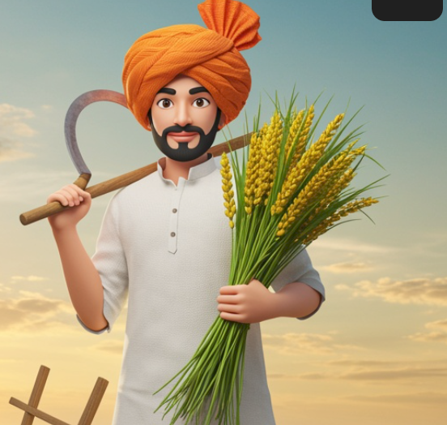

Administration
Dashboard
Farmer readiness and platform activity.
Connecting to the HumusIQ API…
Prototype records are stored on this server in outputs/humusiq-code/data/store.json.

Sign in to save your farm details and readiness plan on this device.
Sign in to continue to your farmer dashboard.
Prototype only. Farmer sign-in is local to this browser; admin summaries are stored by the local server. This is not production authentication.
Farmer readiness and platform activity.
Prototype records are stored on this server in outputs/humusiq-code/data/store.json.
Review saved assessment information and request missing evidence.
| Farmer | Location | Farm area | Readiness | Review status | Actions |
|---|
No farmer assessments are saved in this browser yet.
Demo verifier view. Records are stored locally in this browser and are not shared across devices.
Check your practices, records, land, and water. Get a clear score and simple next steps.
A friendly home for your readiness, farm practices, and next steps.
Your farm journey starts with the knowledge you already have.
A starting estimate based on your farm practices and records.
Not assessed yet · Take the quick farm check to begin.
Choose practices you already use. These are helpful examples; local programs set their own rules.
Help protect soil between growing seasons. Keep a note of the fields and seasons.
Build soil health and reduce disturbance. Photos or field notes can help document changes.
Record irrigation dates and methods, especially if you use drip or other efficient systems.
Keep fertiliser and fuel receipts, and jot down when you apply inputs.
You can start with a notebook or phone photos. Gather only what is available to you.
Tip: Take a photo of paper records so you have a backup.
Small, practical steps. You do not need to do everything today.
Note the crop, field, and season in a notebook or phone.
Gather any lease, ownership paper, receipts, or existing records.
Programs vary by region. Ask which practices and evidence they accept.
Enter your soil and climate readings to see a demo crop prediction and practical next steps.
Combining soil and climate readings for a useful starting point.
Submit the farm readings to view the crop prediction, confidence, soil and climate signals, and suggested next steps.
Your personal and farm contact details.
Land location, area, type, crops, and boundary.
Your latest saved readiness assessment.
Score and category breakdown for your farm.
Missing details and evidence to gather.
Practical next steps from your readiness review.
Print or share your latest readiness report.
Language, voice guidance, and account information.
Choose English or Hindi for the interface and voice guidance.
Listen to the current dashboard section.
Signed in on this browser.
Prototype data stays in this browser. Connect a backend before using this with real farmer records.
A clear starting point, with no guesswork.
Answer a few easy questions about your crops, soil, water, and records.
Get a simple readiness estimate and understand what you’re already doing well.
See the documents to gather and practical changes that may help your farm qualify.
Understand what you already do well and what information may still be needed.
See a simple estimate based on farm practices, land, soil, irrigation, inputs, and records.
Get a clear list of records or details to gather before speaking with a program.
Plan practical improvements and confirm requirements with local agricultural experts.
Some programs may pay farmers for verified practices that reduce emissions or store carbon. Each program has its own rules, evidence requirements, and payment terms. HumusIQ helps you assess readiness; it does not calculate, issue, or sell credits and cannot guarantee eligibility or income.
A few quick questions. Your answers stay on this device.
Tip: Tap Listen to hear this question and its choices.